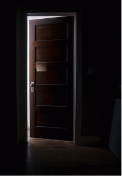

Escape
As you're examing the key, the doors suddenly broke and a giant spider comes out! As you're trying to doge the spider's attack, you've found that the stairs had been reform and you manage to climb your way up to the first floor. Then, by putting the key inside the door, you manage to open it and escape this hunted house. 